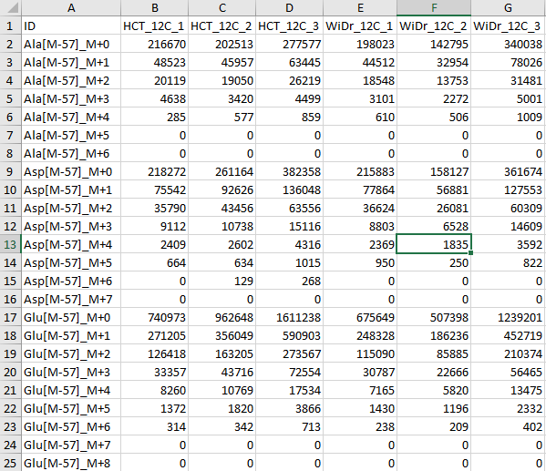
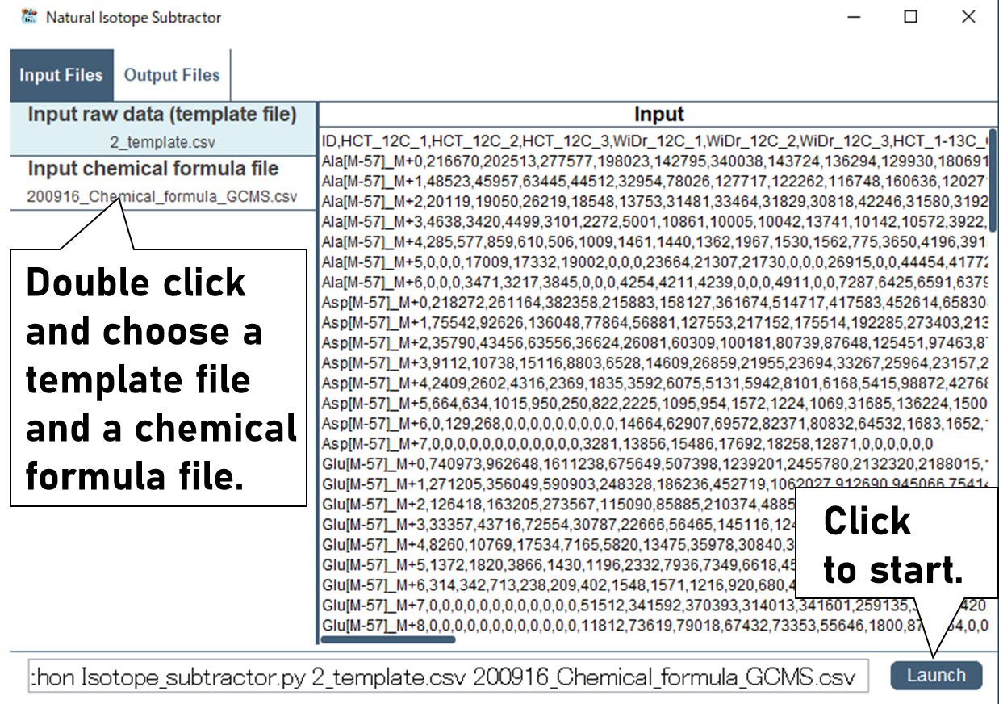
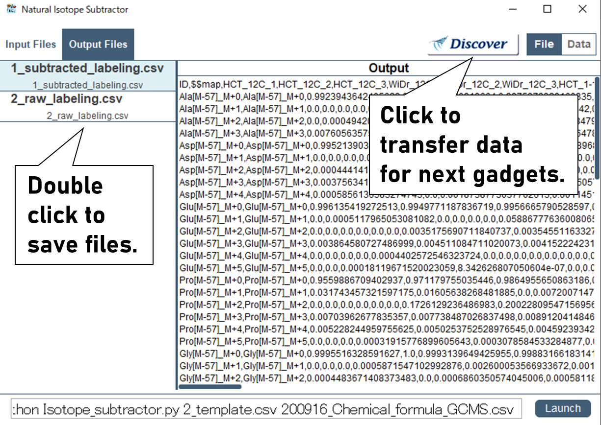

The "Natural Isotope Subtractor" is a program that removes the effects of natural isotopes from raw mass spectrometry data. This allows the accurate interpretation of intracellular metabolic states from isotopic labeling data.
Preparation
Perform isotope tracing culture experiments.
Note:
It is recommended to use substrates labeled with one element (ex. C or N only) to facilitate interpretation of the labeling patterns.
Analyze isotope-labeled metabolites using mass spectrometry.
Perform peak integration for possible isotopomers of target metabolites.
Note:
It is necessary to measure the isotopomer peaks corresponding to the maximum number of labeled atoms in the skeleton plus the number of naturally occurring isotopes.
Procedures
Paste the peak area data to 1_2_Template.csv file generated by "Isotope Template Generator".

Start Garuda and open the “Natural Isotope Subtractor”.
Note:
If you see "Another instance of the Core is already running", click the icon in the lower right corner.
Select the “1_2_Template file.csv” where the measured data was entered and “Chemical formula .csv” used in “Isotope Template Generator”, then click “Launch” button.

Please choose an appropriate analysis mode (ex. "SIM"). Two files will be generated and it can be saved by double click.
Note:
Subtracted labeling.csv is data where the effect of natural isotopes has been removed.
Raw labeling.csv is data where the effect of natural isotopes has NOT been removed.
Note:
If samples are analyzed in its natural state without adding isotope tracers, the ratio of raw mass isotopomer before the removal of natural isotopes should be consistent with the theoretical natural isotope ratio calculated by the "Isotope Template Generator". By comparing these ratios, the analytical method can be validated. This work should be done at least once before conducting isotope labeling experiments. If the difference between the theoretical and the natural ratio is less than 0.01, the labeling fraction of that fragment ion is reliable. If there are overlapping ions, the value may not agree with the theoretical value.
For further analysis, click "Discover" button and choose a next gadget.
Note:
The obtained data can transfer to "Average Labeling Calculator" and "Split_Ratio_Calculator" by clicking "Disocver" button. For data visualization, "Shimadzu MS Data Inport" can be used.
